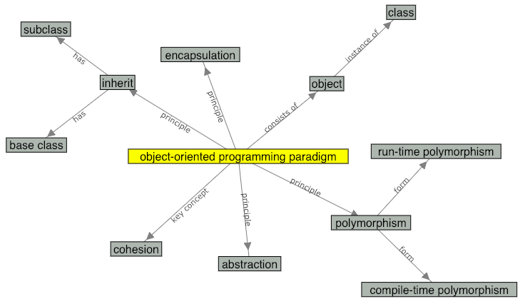

This is a still image of the concept map for the term
"object-oriented programming paradigm". You can check the
actual concept map on the glossary page.

An individual instance in OOP is called a(n) _______
Look at these terms on the concept map.